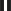

Zenom
Zenom, kullanıcıya ait kontrol programını çalıştırıp kayıt değişkenlerinin değerlerini ölçek, grafik ve sahne pencerelerinde gösteren arayüzdür. Kullanıcıya kontrol değişkenlerinin değerlerini değiştirme imkanı sunar.
Komut satırına sudo zenom yazılarak Zenom çalıştırılır. Zenom'da proje açmak için, File menüsünden Open Project... seçilir. Kontrol programına ait konfigürasyon dosyası (.znm) seçilir. Aşağıda BouncingBall kontrol programına ait Zenom ekran görüntüsü görülmektedir.
düğmesi ile benzetim başlatılır, düğmesi ile benzetim durdurulur. Benzetim başlatıldıktan sonra düğmesi  düğmesine dönüşür ve bu düğmeye basılarak benzetim duraklatılabilir. Frequency ve Duration alanları ile benzetimin çalışma frekansı (Hertz) ve süresi (saniye) ayarlanır.
Pencerenin alt kısmında bulunan durum çubuğunda T (Time) ifadesi benzetimde geçen süreyi gösterir. O (Overrun) ifadesi kontrol programındaki doloop fonksiyonunun girilen frekans aralığından daha uzun sürede tamamlanmasından dolayı oluşan zaman aşımı sayısını gösterir.
Proje ayarlarını kaydetmek için, File menüsünden Save seçeneği seçilir. Bu seçimle kontrol değişkenlerinin değerleri, kayıt parametre penceresindeki kayıt argümanları, ölçek pencerelerinin görünümleri, grafik penceresine çizim için eklenmiş kayıt değişkenleri ve sahne penceresindeki modele bağlı değişkenler zenom konfigürasyon dosyasına (.znm) kaydedilir.
View menüsünden Watch... seçeneği ile kayıt değişkeni değerlerini radyal, doğrusal ve numerik ölçeklerde gösteren Ölçek Pencereleri, Plot seçeneği ile kayıt değişkeni değerlerinin zamana göre değişimlerini iki boyutlu gösteren Grafik Pencereleri, Scene seçeneği ile kayıt değişkenlerinin değerlerini üç boyutlu model üzerinde gösteren Sahne Pencereleri, Control Variables seçeneği ile kontrol parametrelerinin değerlerini değiştirme imkanı sunan Kontrol Parametre Penceresi ve Log Variables seçeneği ile kayıt değişkenlerinin listesini ve kayıt parametreleri girilebilen Kayıt Parametre Penceresi açılır.